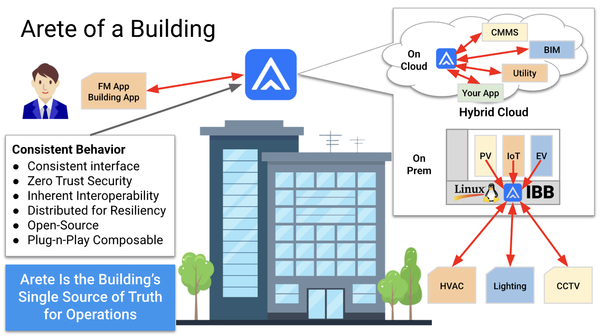
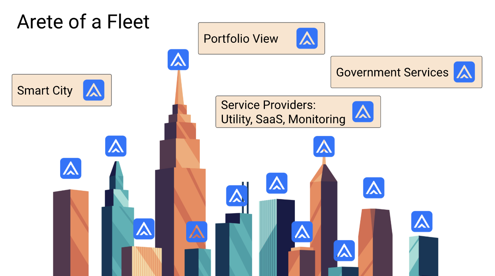

Project Arete
Project AreteArete Smart Buildings
Arete transforms building operations by making each building’s Arete the single trusted authority for its data — consistent, secure management for every asset and application.
Overcoming the Fear of Integration
Despite advances in building technology, most properties still wrestle with fragmented systems that do not talk to one another. Integrating lighting, HVAC, security, and facility apps remains complex and expensive, leaving operational silos, duplicated effort, and unreliable data — so asset owners lack the information they need for capital and operational decisions.
Imagine instead a commercial building where every system operates through a single source of truth. That is the Arete advantage: from siloed devices and scattered data to genuine operational consistency built for business reliability.

The Building’s Digital Heart
At the center of a building’s information management sits Arete, serving as the trusted orchestrator for all connected systems. Facility apps, monitoring tools, utility meters, and security feeds connect on-premises or through secure cloud environments.
Arete’s consistent behavior — secure, interoperable, resilient, plug-and-play — lets professionals manage operations with confidence, trusting every interaction to follow modern security and open standards.

Arete Across the Fleet
Once one building adopts Arete, the playbook scales. Equip every property in a portfolio with its own Arete: each reliably manages its building’s internal assets and coordinates with trusted external service providers, government services, and utility grids — all through standards-based, secure interactions.
Asset management transitions from isolated points to an integrated, context-aware system-of-systems.